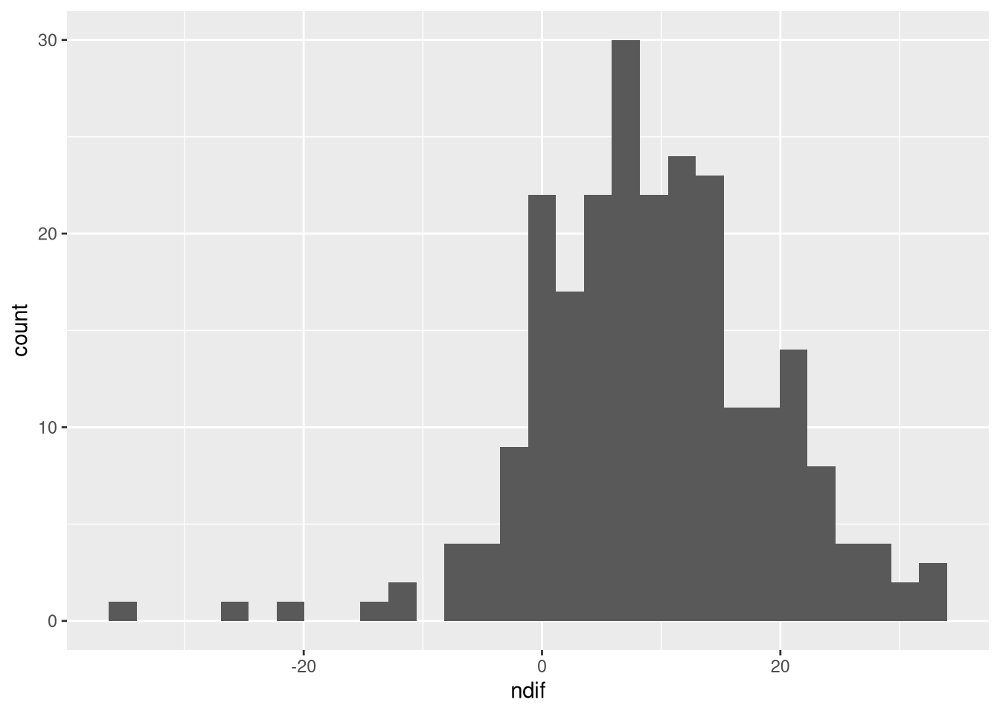
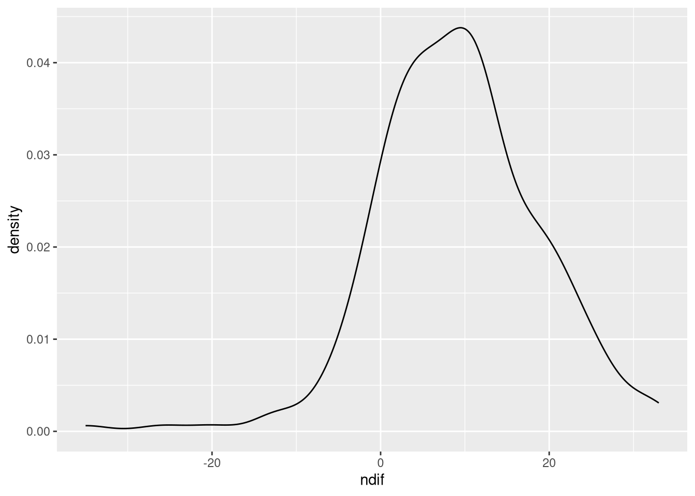
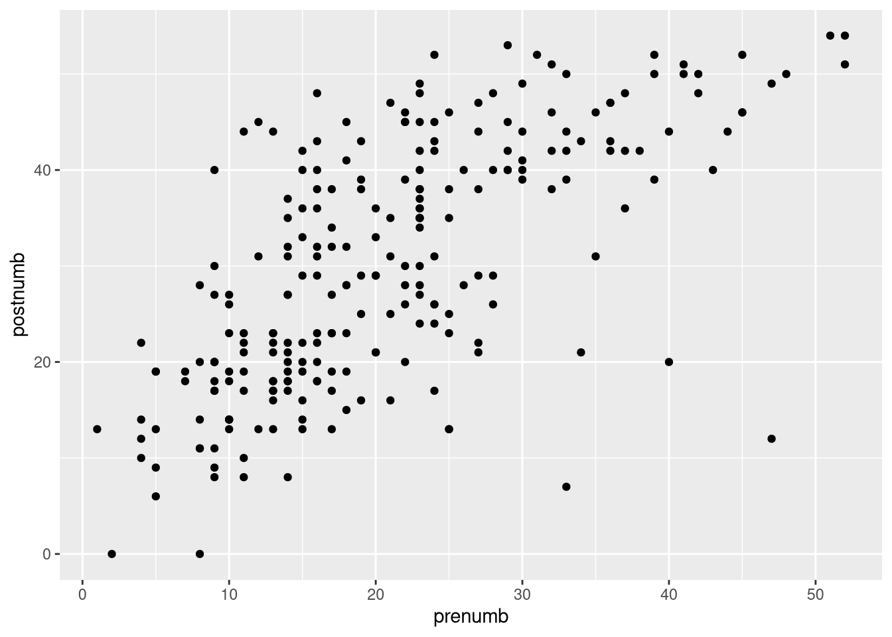
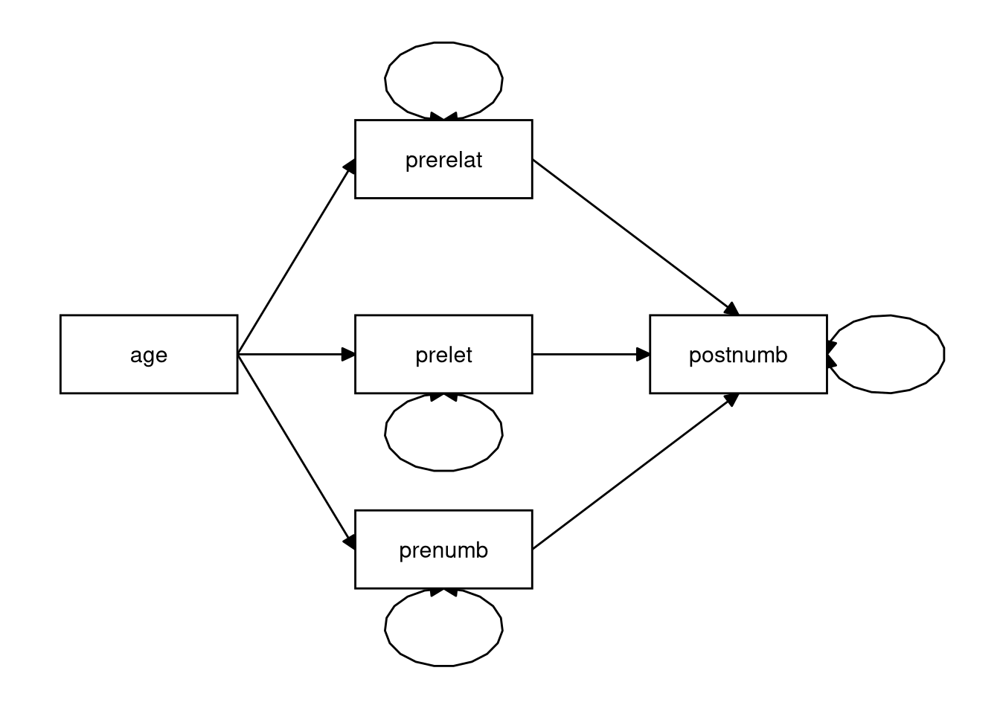
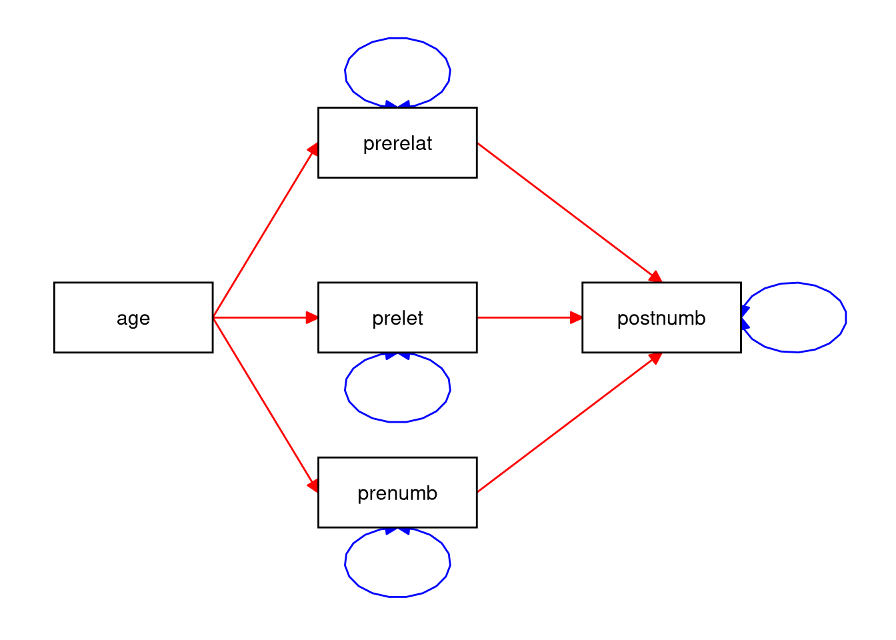
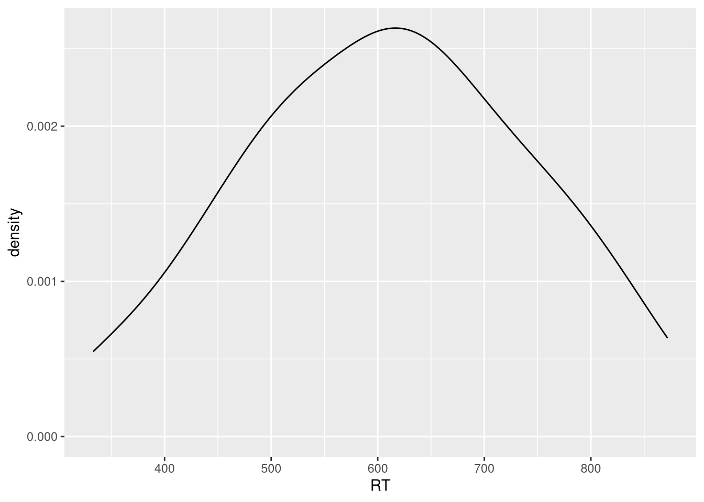
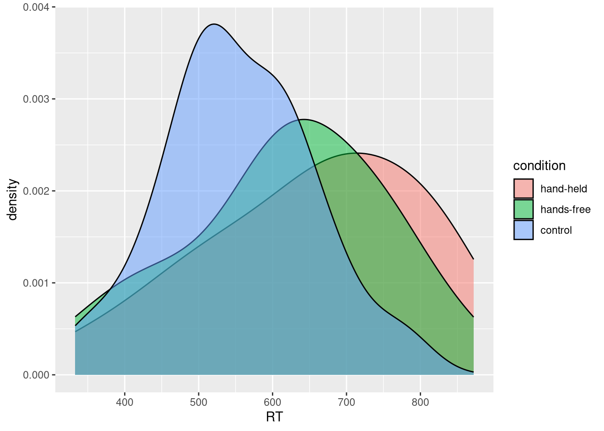

2.4 In-Class Exercises
During this practical, you will work through some exercises meant to expand your statistical reasoning skills and improve your understanding of linear models.
For this exercise, having some familiarity with regression will be helpful. If you feel like you need to refresh your knowledge in this area, consider the resources listed in the Background knowledge section.
Data:
You will use the following dataset for these exercises.
2.4.1 Data Exploration
Open the file “Sesam.sav”
# Load `dplyr` for data processing:
library(dplyr)
# Load the `haven` library for reading in SPSS files:
library(haven)
## Load the 'Sesam.sav' data
## Use haven::zap_formats() to remove SPSS attributes
sesam <- read_sav(file = "Sesam.sav") %>% zap_formats()This file is part of a larger dataset that evaluates the impact of the first year of the Sesame Street television series. Sesame Street is mainly concerned with teaching preschool related skills to children in the 3–5 year age range.
The following variables will be used in this exercise:
- age: measured in months
- prelet: knowledge of letters before watching Sesame Street (range 0–58)
- prenumb: knowledge of numbers before watching Sesame Street (range 0–54)
- prerelat: knowledge of size/amount/position relationships before watching Sesame Street (range 0–17)
- peabody: vocabulary maturity before watching Sesame Street (range 20–120)
- postnumb: knowledge of numbers after a year of Sesame Street (range 0–54)
Note: Unless stated otherwise, the following questions refer to the sesam
data and the above variables.
2.4.1.1
What is the type of each variable?
Hint: The output of the str() function should be helpful here.
Click to show code
## Examine the data structure:
str(sesam)## tibble [240 × 8] (S3: tbl_df/tbl/data.frame)
## $ id : num [1:240] 1 2 3 4 5 6 7 8 9 10 ...
## $ age : num [1:240] 66 67 56 49 69 54 47 51 69 53 ...
## $ prelet : num [1:240] 23 26 14 11 47 26 12 48 44 38 ...
## $ prenumb : num [1:240] 40 39 9 14 51 33 13 52 42 31 ...
## $ prerelat: num [1:240] 14 16 9 9 17 14 11 15 15 10 ...
## $ peabody : num [1:240] 62 80 32 27 71 32 28 38 49 32 ...
## $ postnumb: num [1:240] 44 39 40 19 54 39 44 51 48 52 ...
## $ gain : num [1:240] 4 0 31 5 3 6 31 -1 6 21 ...
## ..- attr(*, "display_width")= int 10Click for explanation
All variables are numeric. str() uses the abbreviation “num” to indicate a
numeric vector.
2.4.1.2
- What is the average age in the sample?
- What is the age range (youngest and oldest child)?
Hint: Use tidySEM::descriptives()
Click to show code
As in the take home exercises, you can use the descriptives() function from
the tidySEM package to describe the data:
library(tidySEM)
descriptives(sesam)Click for explanation
We can get the average age from the “mean” column in the table ( 51.5), and the age range from the columns “min” and “max”, (34 and 69 respectively.)2.4.1.3
- What is the average gain in knowledge of numbers?
- What is the standard deviation of this gain?
Hints:
- You will need to compute the gain and save the change score as a new object.
- You can then use the base-R functions mean() and sd() to do the calculations.
Click to show code
Create a new variable that represents the difference between pre- and post-test scores on knowledge of numbers:
sesam <- mutate(sesam, ndif = postnumb - prenumb)Compute the mean and SD of the change score:
sesam %>% summarise(mean(ndif), sd(ndif))2.4.1.4
- Create an appropriate visualization of the gain scores you computed in 2.4.1.3.
- Justify your choice of visualization.
Hint: Some applicable visualizations are explained in the Visualizations with R section.
Click to show code
library(ggplot2)
## Create an empty baseline plot object:
p <- ggplot(sesam, aes(x = ndif))
## Add some appropriate geoms:
p + geom_histogram()
p + geom_density()
p + geom_boxplot()Click for explanation
Because the gain score is numeric, we should use something appropriate for showing the distribution of a continuous variable. In this case, we can use either a density plot, or a histogram (remember from the lecture, this is like a density plot, but binned).
We can also use a box plot, which can be a concise way to display a lot of information about a variable in a little less space.
2.4.1.5
- Create a visualization that provides information about the bivariate relationship between the pre- and post-test number knowledge.
- Justify your choice of visualization.
- Describe the relationship based on what you see in your visualization.
Hint: Again, the Visualizations with R section may provide some useful insights.
Click to show code
## Create a scatterplot of the pre- and post-test number knowledge
ggplot(sesam, aes(x = prenumb, y = postnumb)) +
geom_point()
Click for explanation
A scatterplot is a good tool for showing patterns in the way that two continuous variables relate to each other. From it, we can quickly gather information about whether a relationship exists, its direction, its strength, how much variation there is, and whether or not a relationship might be non-linear.
Based on this scatterplot, we see a positive relationship between the prior knowledge of numbers and the knowledge of numbers at the end of the study. Children who started with a higher level of numeracy also ended with a higher level of numeracy.
There is a considerable amount of variance in the relationship. Not every child increases their numeracy between pre-test and post-test. Children show differing amounts of increase.
2.4.2 Linear Modeling
2.4.2.1
Are there significant, bivariate associations between postnumb and the following variables?
- age
- prelet
- prenumb
- prerelat
- peabody
Use Pearson correlations to answer this question.
- You do not need to check the assumptions here (though you would in real life).
Hint: The base-R cor.test() function and the corr.test() function from the
psych package will both conduct hypothesis tests for a correlation
coefficients (the base-R cor() function only computes the coefficients).
Click to show code
library(psych)
## Test the correlations using psych::corr.test():
sesam %>%
select(postnumb, age, prelet, prenumb, prerelat, peabody) %>%
corr.test()## Call:corr.test(x = .)
## Correlation matrix
## postnumb age prelet prenumb prerelat peabody
## postnumb 1.00 0.34 0.50 0.68 0.54 0.52
## age 0.34 1.00 0.33 0.43 0.44 0.29
## prelet 0.50 0.33 1.00 0.72 0.47 0.40
## prenumb 0.68 0.43 0.72 1.00 0.72 0.61
## prerelat 0.54 0.44 0.47 0.72 1.00 0.56
## peabody 0.52 0.29 0.40 0.61 0.56 1.00
## Sample Size
## [1] 240
## Probability values (Entries above the diagonal are adjusted for multiple tests.)
## postnumb age prelet prenumb prerelat peabody
## postnumb 0 0 0 0 0 0
## age 0 0 0 0 0 0
## prelet 0 0 0 0 0 0
## prenumb 0 0 0 0 0 0
## prerelat 0 0 0 0 0 0
## peabody 0 0 0 0 0 0
##
## To see confidence intervals of the correlations, print with the short=FALSE option## OR ##
library(magrittr)
## Test the correlations using multiple cor.test() calls:
sesam %$% cor.test(postnumb, age)##
## Pearson's product-moment correlation
##
## data: postnumb and age
## t = 5.5972, df = 238, p-value = 5.979e-08
## alternative hypothesis: true correlation is not equal to 0
## 95 percent confidence interval:
## 0.2241066 0.4483253
## sample estimates:
## cor
## 0.3410578sesam %$% cor.test(postnumb, prelet)##
## Pearson's product-moment correlation
##
## data: postnumb and prelet
## t = 8.9986, df = 238, p-value < 2.2e-16
## alternative hypothesis: true correlation is not equal to 0
## 95 percent confidence interval:
## 0.4029239 0.5926632
## sample estimates:
## cor
## 0.5038464sesam %$% cor.test(postnumb, prenumb)##
## Pearson's product-moment correlation
##
## data: postnumb and prenumb
## t = 14.133, df = 238, p-value < 2.2e-16
## alternative hypothesis: true correlation is not equal to 0
## 95 percent confidence interval:
## 0.6002172 0.7389277
## sample estimates:
## cor
## 0.6755051sesam %$% cor.test(postnumb, prerelat)##
## Pearson's product-moment correlation
##
## data: postnumb and prerelat
## t = 9.9857, df = 238, p-value < 2.2e-16
## alternative hypothesis: true correlation is not equal to 0
## 95 percent confidence interval:
## 0.4475469 0.6268773
## sample estimates:
## cor
## 0.5433818sesam %$% cor.test(postnumb, peabody)##
## Pearson's product-moment correlation
##
## data: postnumb and peabody
## t = 9.395, df = 238, p-value < 2.2e-16
## alternative hypothesis: true correlation is not equal to 0
## 95 percent confidence interval:
## 0.4212427 0.6067923
## sample estimates:
## cor
## 0.520128Click for explanation
Yes, based on the p-values (remember that 0 here really means very small, making it less than .05), we would say that there are significant correlations between postnumb and all other variables in the data. (In fact, all variables in the data are significantly correlated with one another.)
2.4.2.2
Do age and prenumb explain a significant proportion of the variance in postnumb?
- What statistic did you use to justify your conclusion?
- Interpret the model fit.
- Use the
lm()function to fit your model.
Click to show code
lmOut <- lm(postnumb ~ age + prenumb, data = sesam)
summary(lmOut)##
## Call:
## lm(formula = postnumb ~ age + prenumb, data = sesam)
##
## Residuals:
## Min 1Q Median 3Q Max
## -38.130 -6.456 -0.456 5.435 22.568
##
## Coefficients:
## Estimate Std. Error t value Pr(>|t|)
## (Intercept) 7.4242 5.1854 1.432 0.154
## age 0.1225 0.1084 1.131 0.259
## prenumb 0.7809 0.0637 12.259 <2e-16 ***
## ---
## Signif. codes: 0 '***' 0.001 '**' 0.01 '*' 0.05 '.' 0.1 ' ' 1
##
## Residual standard error: 9.486 on 237 degrees of freedom
## Multiple R-squared: 0.4592, Adjusted R-squared: 0.4547
## F-statistic: 100.6 on 2 and 237 DF, p-value: < 2.2e-16Click for explanation
- Yes, age and prenumb explain a significant amount of variability in postnumb (\(R^2 = 0.459\), \(F[2, 237] = 100.629\), \(p < 0.001\)).
- We use the F statistic for the overall test of model fit to support this conclusion.
- The variables age and prenumb together explain 45.9% of the variability in postnumb.
2.4.2.3
Write the null and alternative hypotheses tested for in 2.4.2.2.
Click for explanation
Since we are testing for explained variance, our hypotheses concern the \(R^2\).
\[ \begin{align*} H_0: R^2 = 0\\ H_1: R^2 > 0 \end{align*} \]
Note that this is a directional hypotheses because the \(R^2\) cannot be negative.
2.4.2.4
Define the model syntax to estimate the model from 2.4.2.2 as a path
analysis using lavaan.
Click to show code
mod <- 'postnumb ~ 1 + age + prenumb'2.4.2.5
Estimate the path analytic model you defined above.
- Use the
lavaan::sem()function to estimate the model.
Click to show code
library(lavaan)
lavOut1 <- sem(mod, data = sesam)2.4.2.6
Summarize the fitted model you estimated above.
- Use the
summary()function to summarize the model.
Click to show code
summary(lavOut1)## lavaan 0.6.16 ended normally after 1 iteration
##
## Estimator ML
## Optimization method NLMINB
## Number of model parameters 4
##
## Number of observations 240
##
## Model Test User Model:
##
## Test statistic 0.000
## Degrees of freedom 0
##
## Parameter Estimates:
##
## Standard errors Standard
## Information Expected
## Information saturated (h1) model Structured
##
## Regressions:
## Estimate Std.Err z-value P(>|z|)
## postnumb ~
## age 0.123 0.108 1.138 0.255
## prenumb 0.781 0.063 12.336 0.000
##
## Intercepts:
## Estimate Std.Err z-value P(>|z|)
## .postnumb 7.424 5.153 1.441 0.150
##
## Variances:
## Estimate Std.Err z-value P(>|z|)
## .postnumb 88.864 8.112 10.954 0.000In OLS regression, the predictor variables are usually treated as fixed and do not covary. We can easily relax this assumption in path analysis.
2.4.2.7
Re-estimate the path analytic model you defined in 2.4.2.4.
- Specify the predictors as random, correlated variables.
Hint: You can make the predictors random in, at least, two ways:
- Modify the model syntax to specify the correlation between
ageandprenumb. - Add
fixed.x = FALSEto yoursem()call.
Click to show code
lavOut2 <- sem(mod, data = sesam, fixed.x = FALSE)
## OR ##
mod <- '
postnumb ~ 1 + age + prenumb
age ~~ prenumb
'
lavOut2 <- sem(mod, data = sesam)2.4.2.8
Summarize the fitted model you estimated above.
Click to show code
summary(lavOut2)## lavaan 0.6.16 ended normally after 26 iterations
##
## Estimator ML
## Optimization method NLMINB
## Number of model parameters 9
##
## Number of observations 240
##
## Model Test User Model:
##
## Test statistic 0.000
## Degrees of freedom 0
##
## Parameter Estimates:
##
## Standard errors Standard
## Information Expected
## Information saturated (h1) model Structured
##
## Regressions:
## Estimate Std.Err z-value P(>|z|)
## postnumb ~
## age 0.123 0.108 1.138 0.255
## prenumb 0.781 0.063 12.336 0.000
##
## Covariances:
## Estimate Std.Err z-value P(>|z|)
## age ~~
## prenumb 28.930 4.701 6.154 0.000
##
## Intercepts:
## Estimate Std.Err z-value P(>|z|)
## .postnumb 7.424 5.153 1.441 0.150
## age 51.525 0.405 127.344 0.000
## prenumb 20.896 0.688 30.359 0.000
##
## Variances:
## Estimate Std.Err z-value P(>|z|)
## .postnumb 88.864 8.112 10.954 0.000
## age 39.291 3.587 10.954 0.000
## prenumb 113.702 10.379 10.954 0.000summary(lavOut1)## lavaan 0.6.16 ended normally after 1 iteration
##
## Estimator ML
## Optimization method NLMINB
## Number of model parameters 4
##
## Number of observations 240
##
## Model Test User Model:
##
## Test statistic 0.000
## Degrees of freedom 0
##
## Parameter Estimates:
##
## Standard errors Standard
## Information Expected
## Information saturated (h1) model Structured
##
## Regressions:
## Estimate Std.Err z-value P(>|z|)
## postnumb ~
## age 0.123 0.108 1.138 0.255
## prenumb 0.781 0.063 12.336 0.000
##
## Intercepts:
## Estimate Std.Err z-value P(>|z|)
## .postnumb 7.424 5.153 1.441 0.150
##
## Variances:
## Estimate Std.Err z-value P(>|z|)
## .postnumb 88.864 8.112 10.954 0.000summary(lmOut)##
## Call:
## lm(formula = postnumb ~ age + prenumb, data = sesam)
##
## Residuals:
## Min 1Q Median 3Q Max
## -38.130 -6.456 -0.456 5.435 22.568
##
## Coefficients:
## Estimate Std. Error t value Pr(>|t|)
## (Intercept) 7.4242 5.1854 1.432 0.154
## age 0.1225 0.1084 1.131 0.259
## prenumb 0.7809 0.0637 12.259 <2e-16 ***
## ---
## Signif. codes: 0 '***' 0.001 '**' 0.01 '*' 0.05 '.' 0.1 ' ' 1
##
## Residual standard error: 9.486 on 237 degrees of freedom
## Multiple R-squared: 0.4592, Adjusted R-squared: 0.4547
## F-statistic: 100.6 on 2 and 237 DF, p-value: < 2.2e-162.4.2.9
Consider the path model below.
- How many regression coefficients are estimated in this model?
- How many variances are estimated?
- How many covariances are estimated?

Click for explanation
- Six regression coefficients (red)
- Four (residual) variances (blue)
- No covariances

2.4.2.10
Consider a multiple regression analysis with three continuous independent variables: scores on tests of language, history, and logic, and one continuous dependent variable: score on a math test. We want to know if scores on the language, history, and logic tests can predict the math test score.
- Sketch a path model that you could use to answer this question
- How many regression parameters are there?
- How many variances could you estimate?
- How many covariances could you estimate?
2.4.3 Categorical IVs
Load the Drivers.sav data.
# Read the data into a data frame named 'drivers':
drivers <- read_sav("Drivers.sav") %>%
as_factor() # This preserves the SPSS labels for nominal variablesIn this section, we will evaluate the following research question:
Does talking on the phone interfere with people's driving skills?These data come from an experiment. The condition variable represents the three experimental conditions:
- Hand-held phone
- Hands-free phone
- Control (no phone)
We will use condition as the IV in our models. The DV, RT, represents the participant’s reaction time (in milliseconds) during a driving simulation.
2.4.3.1
Use the package ggplot2 to create a density plot for the variable RT.
- What concept are we representing with this plot?
Hint: Consider the lap times example from the statistical modeling section of Lecture 2.
Click to show code
ggplot(drivers, aes(x = RT)) +
geom_density()
Click for explanation
This shows the distribution of all the combined reaction times from drivers in all three categories.
2.4.3.2
Modify this density plot by mapping the variable condition from your data to
the fill aesthetic in ggplot.
- What is the difference between this plot and the previous plot?
- Do you think there is evidence for differences between the groups?
- How might we test this by fitting a model to our sample?
Click to show code
Hint: To modify the transparency of the densities, use the aesthetic alpha.
ggplot(drivers, aes(x = RT, fill = condition)) +
geom_density(alpha = .5)
Click for explanation
This figure models the conditional distribution of reaction time, where the type of cell phone usage is the grouping factor.
Things you can look at to visually assess whether the three groups differ are the amount of overlap of the distributions, how much distance there is between the individual means, and whether the combined distribution is much different than the conditional distributions.
If we are willing to assume that these conditional distributions are normally distributed and have equivalent variances, we could use a linear model with dummy-coded predictors.
Aside: ANOVA vs. Linear Regression
As you may know, the mathematical model underlying ANOVA is just a linear regression model with nominal IVs. So, in terms of the underlying statistical models, there is no difference between ANOVA and regression; the differences lie in the focus of the analysis.
ANOVA is really a type of statistical test wherein we are testing hypotheses about the effects of some set of nominal grouping factors on some continuous outcome.
- When doing an ANOVA, we usually don’t interact directly with the parameter estimates from the underlying model.
Regression is a type of statistical model (i.e., a way to represent a univariate distribution with a conditional mean and fixed variance).
- When we do a regression analysis, we primarily focus on the estimated parameters of the underling linear model.
When doing ANOVA in R, we estimate the model exactly as we would for linear regression; we simply summarize the results differently.
- If you want to summarize your model in terms of the sums of squares table
you usually see when running an ANOVA, you can supply your fitted
lmobject to theanova()function.
This is a statistical modeling course, not a statistical testing course, so we will not consider ANOVA any further.
2.4.3.3
Estimate a linear model that will answer the research question stated in the beginning of this section.
- Use
lm()to estimate the model. - Summarize the fitted model and use the results to answer the research question.
Click to show code
library(magrittr)
lmOut <- drivers %>%
mutate(condition = relevel(condition, ref = "control")) %$%
lm(RT ~ condition)
summary(lmOut)##
## Call:
## lm(formula = RT ~ condition)
##
## Residuals:
## Min 1Q Median 3Q Max
## -317.50 -71.25 2.98 89.55 243.45
##
## Coefficients:
## Estimate Std. Error t value Pr(>|t|)
## (Intercept) 553.75 29.08 19.042 <2e-16 ***
## conditionhand-held 100.75 41.13 2.450 0.0174 *
## conditionhands-free 63.80 41.13 1.551 0.1264
## ---
## Signif. codes: 0 '***' 0.001 '**' 0.01 '*' 0.05 '.' 0.1 ' ' 1
##
## Residual standard error: 130.1 on 57 degrees of freedom
## Multiple R-squared: 0.09729, Adjusted R-squared: 0.06562
## F-statistic: 3.072 on 2 and 57 DF, p-value: 0.05408anova(lmOut)Click for explanation
The effect of condition on RT is nonsignificant (\(F[2, 57] = 3.07\), \(p = 0.054\)). Therefore, based on these results, we do not have evidence for an effect of mobile phone usage on driving performance.2.4.3.4
Use lavaan to estimate the model from 2.4.3.3 as a path model.
Hint: lavaan won’t let us use factors for our categorical predictors. So, you will need to create your own dummy codes.
Click to show code
mod <- 'RT ~ 1 + HH + HF'
lavOut <- drivers %>%
mutate(HH = ifelse(condition == "hand-held", 1, 0), # Create dummy code for "hand-held" condition
HF = ifelse(condition == "hands-free", 1, 0) # Create dummy code for "hands-free" condition
) %>%
sem(mod, data = .) # Estimate the model
summary(lavOut)## lavaan 0.6.16 ended normally after 1 iteration
##
## Estimator ML
## Optimization method NLMINB
## Number of model parameters 4
##
## Number of observations 60
##
## Model Test User Model:
##
## Test statistic 0.000
## Degrees of freedom 0
##
## Parameter Estimates:
##
## Standard errors Standard
## Information Expected
## Information saturated (h1) model Structured
##
## Regressions:
## Estimate Std.Err z-value P(>|z|)
## RT ~
## HH 100.750 40.085 2.513 0.012
## HF 63.800 40.085 1.592 0.111
##
## Intercepts:
## Estimate Std.Err z-value P(>|z|)
## .RT 553.750 28.344 19.537 0.000
##
## Variances:
## Estimate Std.Err z-value P(>|z|)
## .RT 16068.028 2933.607 5.477 0.000At this point, we haven’t covered the tools you need to conduct the ANOVA-style tests with path models. So, you can’t yet answer the research question with the above model.
- When we discuss model comparisons, you’ll get the missing tools.
End of In-Class Exercises 2